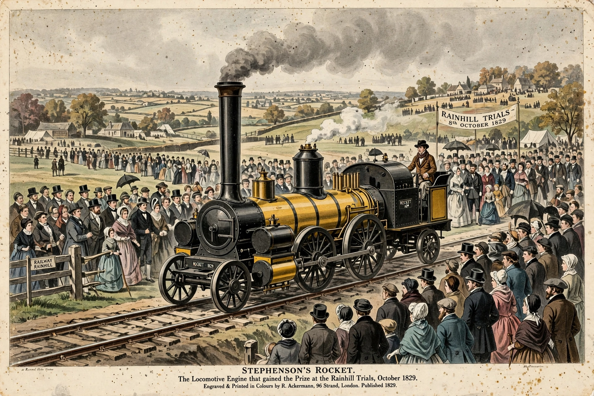

Rainhill trials
| Rainhill trials | |
|---|---|
 | |
| Date | October 1829 |
| Location | Rainhill, Lancashire, England |
| Organiser | Liverpool and Manchester Railway |
| Prize | £500 |
| Winner | Rocket, by George and Robert Stephenson |
The Rainhill trials were a competition held in October 1829 by the directors of the Liverpool and Manchester Railway to determine which type of locomotive would haul trains on their new line. Five locomotives competed on a level stretch of track at Rainhill, near Liverpool. The trials were won decisively by Rocket, designed by George Stephenson and his son Robert, and the event is regarded as a landmark in the history of steam locomotion and the early railway age.
Background
The directors of the Liverpool and Manchester Railway were divided between advocates of stationary steam engines hauling trains by cable and supporters of self-propelled locomotives. They offered a prize of £500 for a locomotive that met conditions including a maximum weight, a minimum sustained speed, and the ability to haul a load of three times its own weight over the test course. Entrants had to complete repeated runs over a course of about 1.5 miles (2.4 km), amounting to the equivalent of a return trip between Liverpool and Manchester.
The competitors
Five machines took part: Cycloped, a horse-powered treadmill locomotive entered by Thomas Shaw Brandreth; Perseverance by Timothy Burstall, which was damaged in transit and could not compete properly; Sans Pareil by Timothy Hackworth; Novelty by John Braithwaite and John Ericsson, a light and fast engine that suffered repeated mechanical failures; and Rocket by the Stephensons.
The trials
Novelty was a popular favourite with spectators and initially fast, but its bellows and boiler joints failed repeatedly. Sans Pareil performed creditably but was overweight and its cylinder cracked. Rocket, incorporating a multi-tubular boiler, a blast pipe and a separate firebox, completed its runs reliably at speeds up to about 30 mph (48 km/h) while hauling the required load, and was the only entrant to finish the trials successfully.
Legacy
The victory of Rocket settled the question in favour of locomotives for the Liverpool and Manchester Railway, which opened in September 1830, and set the basic pattern — multitubular boiler, blastpipe and direct drive — for steam locomotive design for the rest of the steam era.